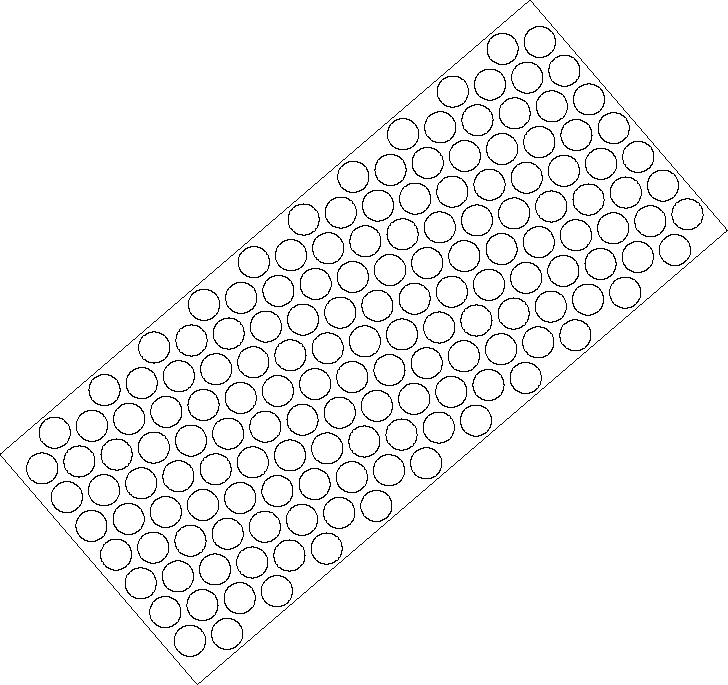

Autodesk AutoCAD 2021: ActiveX Developer's Guide > ActiveX/VBA Tutorial: Design the Garden Path > Tutorial: Designing a Garden Path (VBA/ActiveX) >
A Public subroutine, also known as a macro, can be executed from the AutoCAD user interface.
In the following steps, you learn to execute and use the gardenpath macro from the AutoCAD user interface.
 Applications panel Run VBA Macro.
Applications panel Run VBA Macro. Macro name:
prompt, enter gardenpath.dvb!ThisDrawing.gardenpath.Specify start point of path:
prompt, enter 2, 2.Specify endpoint of path:
prompt, enter 9, 8.Specify half width of path:
prompt, enter 2.Specify radius of tiles:
prompt, enter .2.Specify spacing between tiles:
prompt, enter .1.The specified values should result in a garden path as shown in the following figure:
